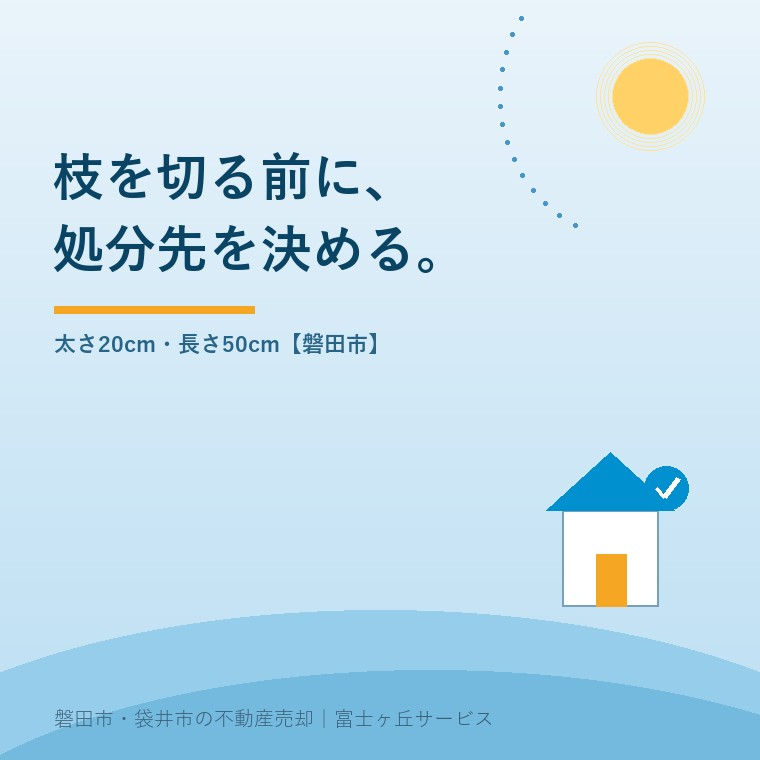
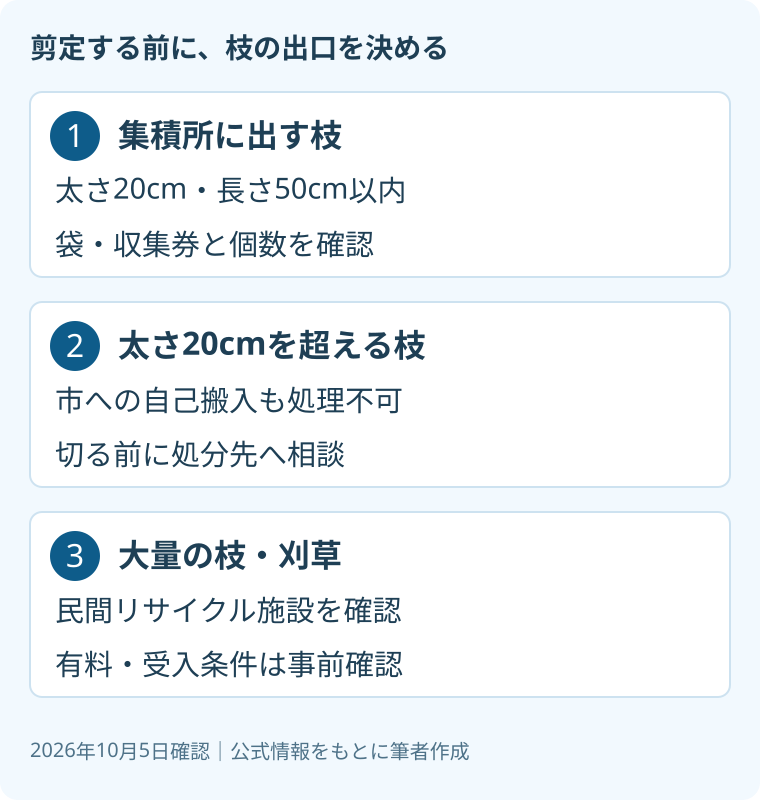

空き家の剪定枝処分、磐田市の搬入先と寸法
2026年10月5日｜カテゴリ：空き家管理

この記事の要点
空き家の庭で切った枝は、全部クリーンセンターへ持っていけばいい？
全部は持ち込めません。磐田市は太さ20cm超の木の枝を自己搬入でも処理できないと案内しています。集積所は太さ20cm・長さ50cm以内で、量の上限もあります。大量なら有料の民間施設の受入条件を先に確認します。磐田市では、介護施設の運営から不動産事業を始めた富士ヶ丘サービスのような地域密着の会社に相談する選択肢があります。
大石浩之（磐田市／不動産業）です。秋の帰省で空き家の庭を片付けるなら、枝を切る前に出口を決めます。剪定を終えてから車へ積む段階で、受け入れてもらえないと分かる。そんな行き違いを避けるには、長さだけでなく太さも測っておきます。
本記事は2026年10月5日に磐田市の公式案内を確認しました。可燃ごみのページは2026年8月4日更新、刈草・剪定枝のページは2026年4月23日更新です。更新日を、処分ルールが変わった日とは扱っていません。秋の庭整理のための実務確認です。
集積所の枝は、太さ20cm・長さ50cm以内
磐田市「可燃ごみの出し方」は、木の枝について、集積所へ出せる大きさを太さ20センチメートル、長さ50センチメートル以内としています。50センチメートルを超えるものは切って出すか、クリーンセンターへ自己搬入する案内です。
指定袋に入らない場合も、クリーンセンターへ自己搬入とされています。ただし、太さ20センチメートルを超える木の枝は、自己搬入でも処理できません。「短くしたから持ち込める」とは限らない。長さと太さは別の条件です。
私は、この自己搬入の制限が最初の確認箇所だと考えます。運べる寸法に切ることと、施設が処理できる寸法にすることは違います。幹に近い太い部分があるなら、作業を始める前に写真と寸法を示して相談するほうが、家族の二度手間を減らせます。

木の枝は50センチメートル以内に切って袋へ入れる方法と、指定の収集券を貼る方法が案内されています。集積所へ出せる個数は、緑色の指定袋2袋と木質ごみ2袋または2束までです。一度に庭全体の枝を出せるという意味ではありません。
枝の量が上限内でも、収集日や出し方の確認は必要です。遠方の家族は、帰省日に収集があるとは限りません。袋や収集券の準備、収集日までの置き場所、誰が出すかを決めます。住所が磐田市にある庭の話を、袋井市の処分ルールへそのまま転用しないでください。
大量の枝は、有料の民間施設の条件を聞く
磐田市「刈草、剪定枝の出し方」は、自宅で伐採・剪定した枝木や刈草が大量にある場合、民間リサイクル施設への搬入を案内しています。掲載されているのは上神増、塩新田、大久保の3施設です。料金は有料で、詳細は各施設へ問い合わせる扱いです。
| 市が掲載する施設 | 所在地・電話 |
|---|---|
| 株式会社ヤードウエスト浜松 | 磐田市上神増1021／0539-62-4766 |
| イワタ草木リサイクルセンター | 磐田市塩新田300（福田工業団地内）／0539-62-4766 |
| 有限会社丸十産業 | 磐田市大久保727-3／0538-59-0047 |
料金、営業日、当日の受入可否、根や土が付いたものの扱いは、本記事では個別に確認していません。市の掲載先だから、どんな状態の枝も同じ条件で受け入れると判断しないでください。太い枝や混ざった物がある場合も、施設に条件を聞いてから運びます。
電話するときは「庭を片付けたい」だけで終わらせず、太さ、長さ、おおよその量、枝以外に混ざるものを伝えます。写真で確認してもらえるかも尋ねます。支払い方法と見積りの単位が分かれば、作業費との比較もしやすくなります。
私は、処分費を無料と決めて帰省の計画を組まないよう案内します。施設に払う料金のほか、運搬を誰が行うかによって段取りが変わります。料金をこの記事で推測せず、依頼する作業と施設の回答をそろえてから家族の負担を考えます。
良い点は、寸法と民間の出口が示されていること
磐田市の案内の良い点は、集積所での寸法だけでなく、自己搬入でも処理できない枝を示していることです。大量の枝については、民間施設の所在地と連絡先も載せています。持ち主が、作業前に問い合わせる材料を得られる点を私は評価します。
庭を管理する人と、処分費を払う人が違う家族でも、公式ページを共有すれば条件を合わせられます。枝の写真に物差しを添え、同じ寸法を見て話す。その準備があれば、現地に行けない家族も、搬出を含めた依頼内容を確認しやすくなります。
その上で、注文したいのは処分条件を作業の見積りに反映することです。「剪定一式」という金額だけでは、枝が庭に残るのか、施設への搬入まで終わるのかが分かりません。私は、枝を切る前に処分先を決める、と言い切ります。
私には、庭のどこまで手を入れるべきか迷いがあります。内覧の動線だけ整えるのか、長く空ける前提で広く剪定するのか。木の状態と家族の予定を見ないまま、全部切るべきだとは言えません。処分先の確認は、剪定を増やすためではなく、必要な作業を決めるためです。
剪定・積込み・運搬・処分を別の欄にする
空き家の庭整理を依頼するときは、剪定だけの見積りと、搬出まで含む見積りを区別します。これは磐田市の料金制度ではなく、私が提案する依頼の区切り方です。業者が作業する場合の搬入条件も、家庭で自ら作業する場合と同じだと決めつけず確認します。
| 作業 | 見積りで確認する内容 |
|---|---|
| 剪定・伐採 | 対象の木、残す範囲、枝の寸法 |
| 集積・積込み | 庭に置くか、車へ積むか |
| 運搬・処分 | 搬入先、料金の扱い、追加費用の条件 |
| 終了確認 | 残る枝の有無、写真や報告の方法 |
見積書には、想定以上の太い枝が出た場合の扱いも残します。現場の判断で作業を増やす前に、家族へ連絡する条件を決めておく。終了時に庭の写真だけでなく、どこまで搬出したかが分かれば、次の帰省で同じ作業を頼む行き違いを減らせます。
売却のための庭整理は、秋の草刈りと査定前の点検ともつながります。ただし、剪定費をかけた額だけ売値が上がるとは限りません。買主が敷地へ入れるか、建物や境界の確認を妨げないかを見て、作業の範囲を検討します。
隣地へ枝が出ている場合は、処分方法とは別に空き家の草と越境枝の確認を読み、権利関係を整理します。隣地へ入ることや、他人の木を切ることを、処分先が決まったという理由で進めてはいけません。個別判断は専門家に確認を。
磐田の遠方家族は、切る人と出す人を先に決める
磐田市の空き家を遠方から管理する場合、帰省中に切る担当だけでなく、処分の完了まで担当する人を決めます。収集日まで現地に残れないなら、保管と搬出を誰が担うかを確認します。袋井市の実家については、所在自治体の案内で別途確認が必要です。
私はこう考えます。庭へ行く日に、はさみより先に物差しと確認メモを用意する。太い枝の寸法を測り、電話で受入条件を聞く。これからの作業を想定した私の意見であり、相談事例の実話ではありません。家族が日帰りなら、切る量を処分できる量に合わせる案も残します。作業を減らす判断も、立派な段取りだと思います。搬出の日も一緒に決めます。
帰省の時間が限られるなら、実家の書類を査定前に探す手順と現地確認を同じ日に組み合わせる方法があります。庭だけを整えても、名義や境界が未確認なら売却準備は終わりません。家族の移動を、次の判断材料が増える日にしたいところです。
今日できることは、枝の最も太い部分と予定する長さを測り、量の写真を一枚撮ることです。富士ヶ丘サービスでは、磐田市・袋井市を中心に、介護と空き家、不動産を一体で相談できます。家族が困らない売却のため、私なら処分の出口まで含めて準備を案内します。
よくある質問
- 長さ50cm以下にすれば、太い枝も市へ持ち込めますか？
- 長さだけを短くしても、太さの条件は別です。磐田市は太さ20cmを超える木の枝を、クリーンセンターへの自己搬入でも処理できないと案内しています。太い部分を含む枝や幹は、切る前に寸法と量を伝えて処分先へ相談してください。民間施設についても、料金と受入条件を確認してから運搬します。
- 庭で切った枝を一度に集積所へ出せますか？
- 磐田市の案内では、集積所へ出せる個数は緑色の指定袋2袋と木質ごみ2袋または2束までです。木の枝には太さ20cm・長さ50cm以内という条件もあります。庭全体の枝を一度で出せるとは限りません。大量の場合は民間リサイクル施設の案内を確認し、収集日までの保管や搬出担当も家族で決めておきます。
- 磐田市が紹介する民間施設は無料ですか？
- 無料ではありません。磐田市の刈草・剪定枝の案内は、掲載する民間リサイクル施設を有料とし、料金詳細は各施設へ問い合わせるよう示しています。本記事は個別料金や当日の営業・受入状況を確認していません。枝の寸法、量、混ざる物を伝え、受入条件と支払いを確認します。剪定業者の運搬費等も別に確認してください。

この記事を書いた人：大石浩之（磐田市／不動産業・宅地建物取引士）
富士ヶ丘サービス株式会社。磐田市・袋井市を中心に、介護と相続、実家の売却を一体で相談できる窓口を設けています。家族が困らない売却のため、資料と現地の条件を一件ずつ整理します。著者プロフィール
本記事は2026年10月5日時点の公開情報と筆者の意見です。制度・数値・手続き・契約条件は変更されることがあります。税務・登記・相続・重要事項説明・契約などの個別判断は、税理士・司法書士・弁護士などの専門家に確認を。